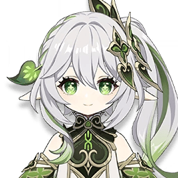
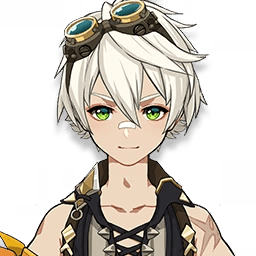

The last Yaksha of Liyue, Xiao is a solitary guardian who protects the land from hidden dangers.
Wielding Anemo and a ruthless spear style, he fights tirelessly despite the karmic burden he bears.
Ganyu
Affiliation: General Secretary of the Liyue Qixing
Sinae Unicornis
Half-adeptus and secretary of the Liyue Qixing, Ganyu works tirelessly to maintain harmony in the city.
Her Cryo archery is as graceful as her dedication is unwavering.
Hu Tao
Affiliation: Wangsheng Funeral Parlor
Papilio Charontis
The playful yet profound 77th Director of the Wangsheng Funeral Parlor, Hu Tao balances mischief with wisdom.
Her Pyro powers and sharp insight make her a master of both life’s joys and its endings.
Keqing
Affiliation: Yuheng of the Liyue Qixing
Trulla Cementarii
The Yuheng of the Liyue Qixing, Keqing believes in human potential over destiny.
With Electro speed and relentless determination, she pushes Liyue toward progress through her own hands.

Shenhe
Affiliation: Cloud Retainer's Abode
Crista Doloris
Raised by Cloud Retainer, Shenhe carries a cold, otherworldly aura shaped by her adeptal training.
Her Cryo polearm strikes are powerful and precise, reflecting years of isolation and discipline.
Tartaglia
Affiliation: Fatui Harbingers, No. 11th
Monoceros Caeli
A daring and unpredictable Fatui Harbinger, Childe lives for the thrill of battle.
Skilled with both Hydro arts and close-combat techniques, he’s as charming as he is dangerous.

Zhongli
Rex Lapis
Lapis Dei
A knowledgeable consultant of Wangsheng Funeral Parlor and the former Geo Archon.
Calm and wise, Zhongli carries the weight of Liyue’s history with elegance and unshakable composure.
Yelan
Affiliation: Ministry of Civil Affairs
Umbrabilis Orchis
A mysterious intelligence agent who moves in the shadows, Yelan follows no one’s schedule but her own.
Her Hydro abilities and precise instincts make her a master of secrets and strategy.
Xianyun
Affiliation: Liyue Adepti
Grus Serena
The elegant human form of Cloud Retainer, Xianyun brings her adeptal wisdom into Liyue with curiosity and flair.
Her Anemo abilities help others soar, literally and figuratively.
Baizhu
Affiliation: Bubu Pharmacy
Lagenaria
The gentle doctor of Bubu Pharmacy, Baizhu uses his Dendro abilities and deep knowledge of medicine to heal others.
Despite his calm smile, he carries secrets tied to life, death, and the serpent spirit at his side.